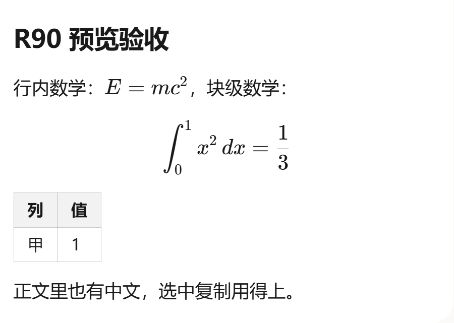
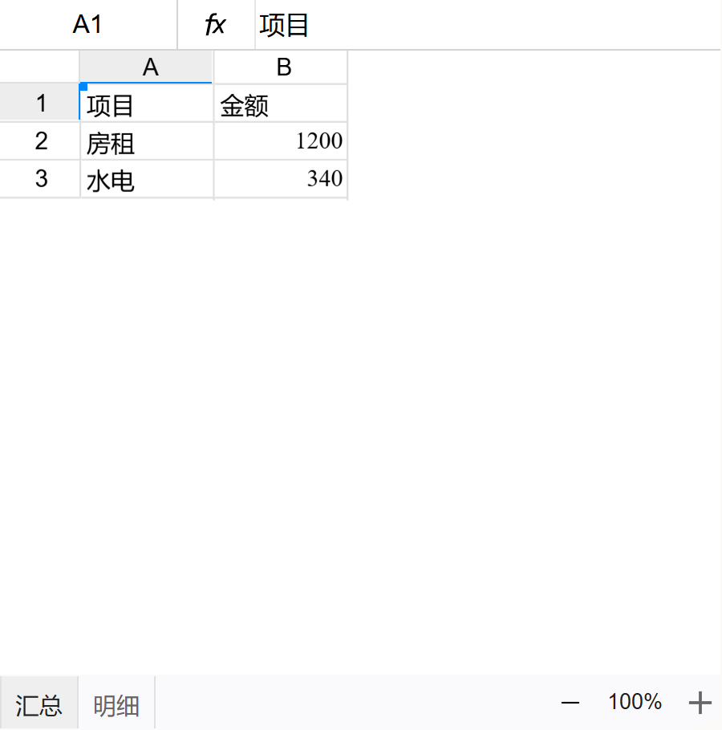

对话，有据可循。
围绕手头的文件展开讨论，查看思考与工具调用过程。对话不再悬在半空，而是与正在处理的任务相连。
会话管理 / 工具调用 / 文件阅读
好的工具，不止给你一个回答。
kyclaw 把 AI
对话、文件与预览放进同一个工作台，让思考有上下文，让成果看得见。
Windows 桌面应用 · 最新发布版 · 为真实工作而设计
少一点来回切换。
多一点心流时间。
从一句提问，到一份文档。
让原本散落在不同窗口里的工作，
回到一张清晰的桌面。
围绕手头的文件展开讨论，查看思考与工具调用过程。对话不再悬在半空，而是与正在处理的任务相连。
会话管理 / 工具调用 / 文件阅读在工作台中预览文档、表格、PDF、图片和 Markdown。办公文档按页查看，表格支持切换工作表，不必为了确认内容频繁跳出应用。
文档 / 表格 / PDF / 图片 / HTML用全局与项目记忆指令表达你的工作偏好，在记忆空间中查看、编辑与清空内容。把反复交代的要求，变成更清楚的协作起点。
记忆空间 / 全局偏好 / 项目指令写方案、理资料、读报表。让 AI 参与具体的工作，而不只是停留在聊天框里。
一个工作台 · 一条连贯的思路配置模型与工作区，从一份资料或一个具体问题开始。告诉 kyclaw 你想达成什么。
结合文件内容梳理信息、完善表达。查看执行过程，并根据所选权限模式确认需要审批的操作。
在预览区核对内容与版式，把反馈带回对话。最终成果仍需你检查、判断与确认。
以下为应用预览区域的真实截图，内容来自测试演示资料，并非客户数据。点击图片可查看原图。


把能力说清楚，
也把边界说明白。
kyclaw 是桌面应用，这个页面是产品介绍页。当前提供 Windows 安装包，安装后在本机使用；AI 对话需要先配置可用的模型服务。
支持常见图片、Markdown、HTML、PDF，以及 Word、PowerPoint 和表格文件的预览。办公文档通过随包的 LibreOffice 在本机转成 PDF 后按页显示；缺少字体时，版式可能与原文档不同。办公文档预览的源文件上限为 32 MiB。
不是。预览与 AI 读取是不同的能力。PDF 读取仅提取文字层，不支持 OCR；扫描件不保证可读。表格预览为只读，不显示其中的图表、图片、形状与条件格式，公式仅展示文件中已保存的结果。
办公文档预览转换在本机进行，但这不等于所有使用过程都离线。使用远程模型或联网工具时，相关内容可能发送至对应服务。请根据所选服务、工具与权限设置评估数据边界，不要提交未经授权的敏感资料。
准备 Windows 电脑、可用的模型服务配置，并选择工作区。安装包目前没有代码签名；若系统提示风险，请先核实下载来源与文件，不要忽略来源不明的安全警告。
kyclaw for Windows / 最新发布版
固定下载地址，随发布更新。
安装后请配置可用的模型服务；安装包未签名，请先核实下载来源。